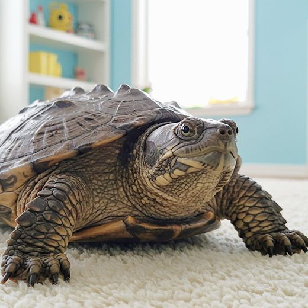
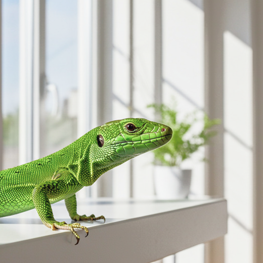
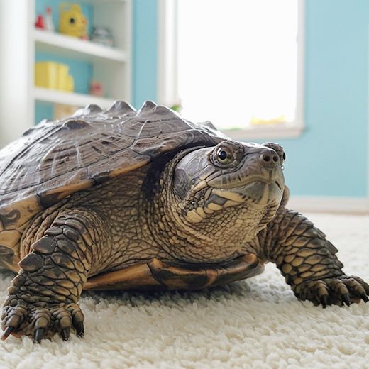
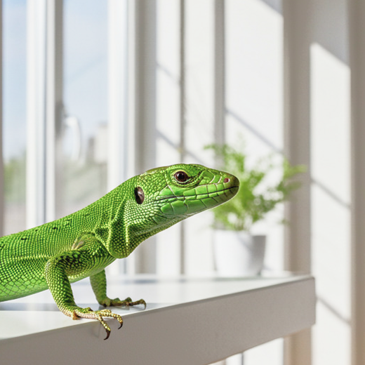

- 2025/08/01
- お盆期間中（8/13〜8/16）は午前のみの診療となります。
お知らせ・ブログ一覧
MENU
| 月 | 火 | 水 | 木 | 金 | 土 | 日 | 祝 | ||
|---|---|---|---|---|---|---|---|---|---|
| 診療 | 9:00 ~ 12:00 6:00 ~ 19:00 |
● | ● | ▲ | ● | ● | ● | ▲ | |
| ペットホテル | 24時間受付 | ● | ● | ● | ● | ● | ● | ● | ● |
| トリミング | 9:00 ~ 19:00 | ● | ● | ● | ● | ● | ● | ||
| しつけ教室 | 14:00 ~ 19:00 内で要相談 |
● | ● |
▲ 午後休診
臨時休診等は公式LINEからお知らせいたします。
病気の治療だけでなく、しつけや日常のケアまで。
私たちは、動物と人がもっと仲良く暮らせるお手伝いをしています。
発熱・食欲不振・咳など、日常的な体調不良やケガの処置などに対応します。
お口のニオイや歯の汚れ、歯ぐきの腫れなどが気になるときに。
心臓や血管の病気は、早期発見がとても大切です。レントゲンやエコー検査での、心臓の健康をしっかりチェックします。
目やに・充血・涙が多いなど、見た目で気づきやすい症状にも丁寧に対応します。目のトラブルは進行が早いため、早めの受診をおすすめします。
フィラリアやノミ・ダニの予防、混合ワクチン接種など、年間を通してサポートいたします。
年齢に応じた定期的な健康チェックで、病気の早期発見・予防をサポート。血液検査や画像診断を用いて、体の内側までしっかりチェックします。


 



※一部の動物は対応できないこともありますので、事前にお電話でお問い合わせいただけるとスムーズです。
休診
午後休診